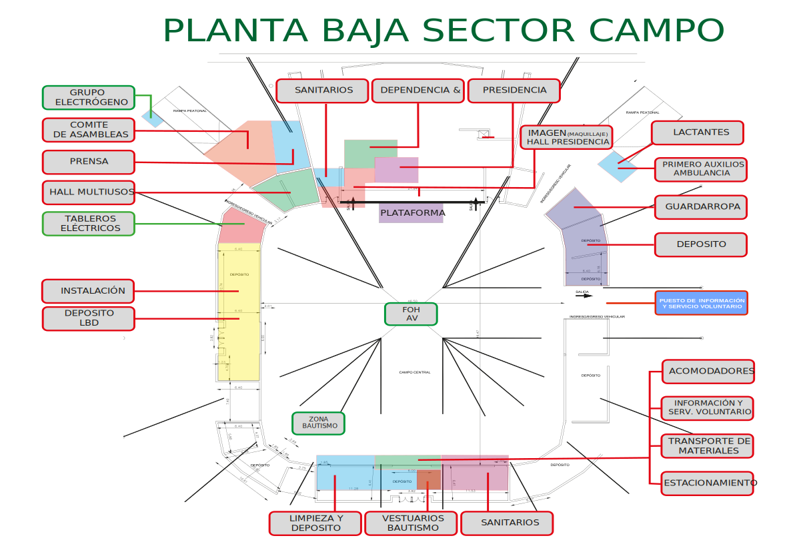

  <!-- Mapa Planta Baja -->
  <div class="container-fluid py-4" style="background: white;">
    <div class="text-center">
      <h2 class="fw-bold mb-4" style="color: var(--text-dark);">Mapa Planta Baja</h2>
      <div class="map-container" style="max-width: 600px; margin: 0 auto; padding: 15px; background: white; border-radius: 8px; box-shadow: 0 2px 8px rgba(0,0,0,0.1);">
        
      </div>
    </div>
  </div>